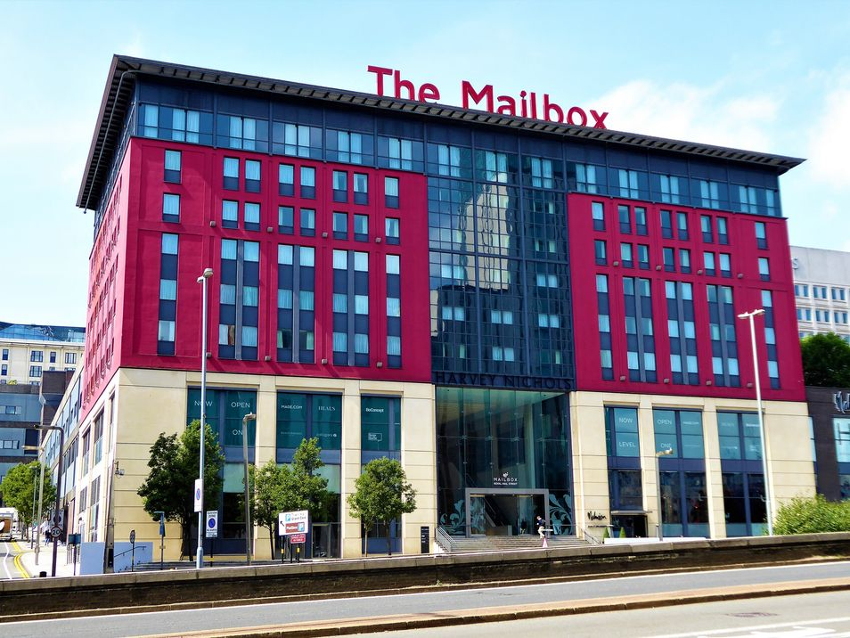
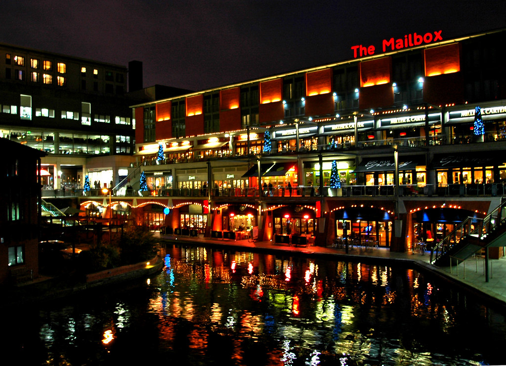
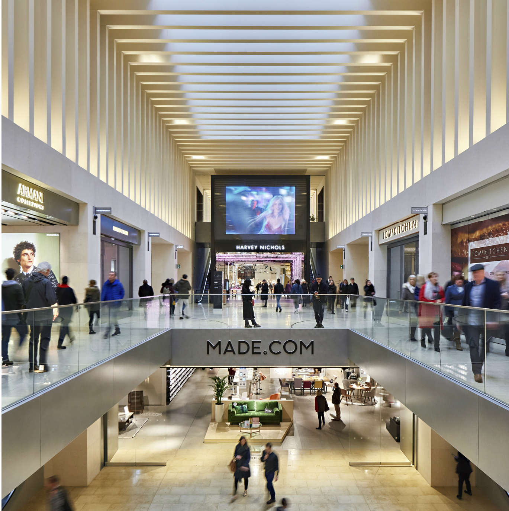
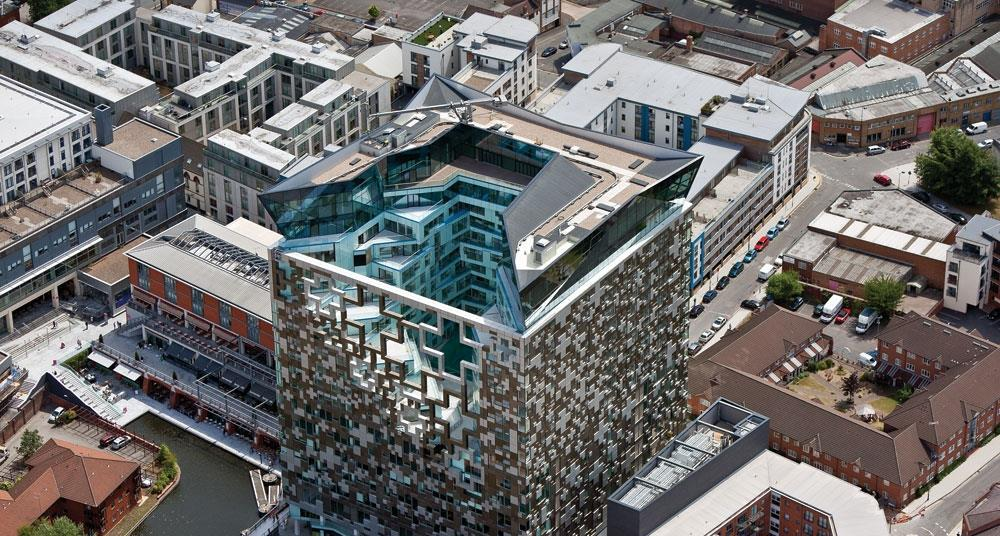
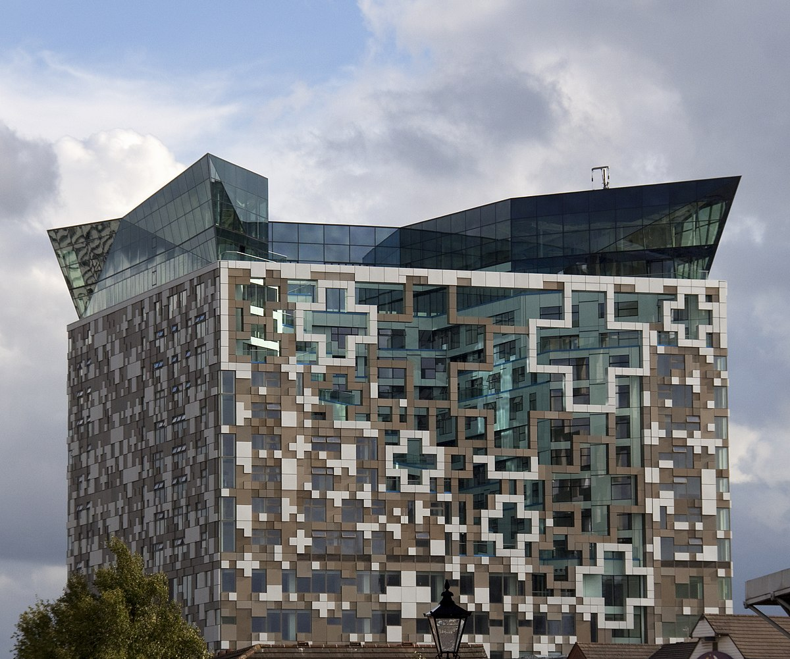
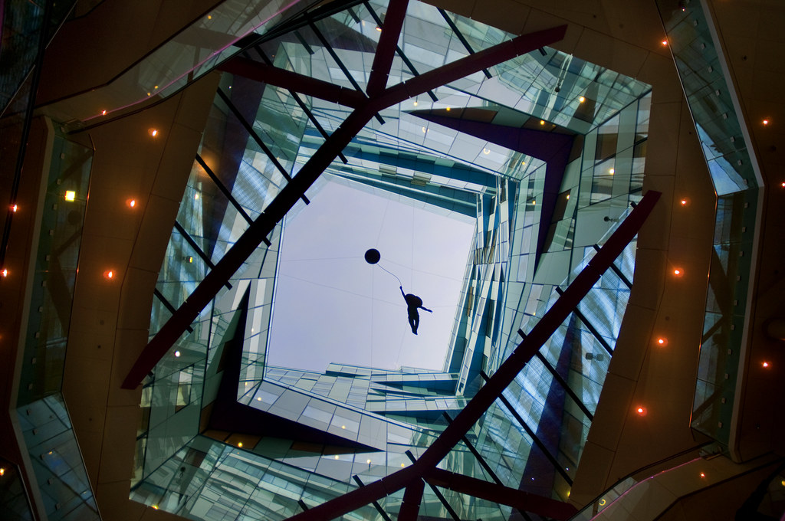

The Mailbox
The Mailbox is a popular shopping and entertainment destination located in the heart of Birmingham city centre. The building was originally constructed as a Royal Mail sorting office in the 1970s but was transformed into a luxury shopping and leisure complex in 1998. Today, the Mailbox is home to a variety of high-end fashion retailers, restaurants, bars, and a luxury hotel.
One of the most distinctive features of the Mailbox is its architecture. The building's unique curved shape and glass exterior make it stand out from the surrounding buildings. The interior of the Mailbox is equally impressive, with a modern and luxurious design that creates a welcoming and sophisticated atmosphere.
The Mailbox is a popular destination for shoppers looking for high-end fashion and luxury goods. The building is home to a number of designer stores, including Harvey Nichols, Emporio Armani, and Hugo Boss. In addition to fashion, the Mailbox also features a range of other retailers, including a specialist wine shop and a high-end home goods store.
In addition to shopping, the Mailbox also offers a variety of dining and entertainment options. The building is home to several restaurants and bars, including Tom's Kitchen and Gas Street Social. The Mailbox also features a state-of-the-art cinema and a performance venue that hosts a variety of shows and events throughout the year.
One of the most unique features of the Mailbox is its connection to The Cube, a nearby skyscraper that houses luxury apartments, offices, and a hotel. The Cube and the Mailbox are connected by a pedestrian walkway that runs between the two buildings. This connection makes it easy for visitors to explore both destinations and enjoy everything that they have to offer.
The Mailbox is also located close to several other popular attractions in Birmingham city centre. The building is just a short walk from the Birmingham Museum and Art Gallery, the Symphony Hall, and the Birmingham Hippodrome. This proximity to other attractions makes the Mailbox an ideal destination for visitors looking to explore the city and experience its rich cultural offerings.
In conclusion, the Mailbox is a unique and impressive destination in the heart of Birmingham city centre. Its striking architecture, high-end retailers, and sophisticated dining and entertainment options make it a must-visit destination for shoppers, tourists, and locals alike. With its close proximity to other popular attractions in the city, the Mailbox is the perfect place to start your exploration of Birmingham's vibrant and dynamic culture.
  The Cube
The Cube building is one of the most distinctive and recognizable buildings in Birmingham city centre. Completed in 2010, the 25-story skyscraper has become a symbol of the city's modern and vibrant identity. The Cube is located in the heart of the city centre, adjacent to the historic Mailbox shopping and leisure complex. The Cube and the Mailbox are connected by a pedestrian walkway that runs between the two buildings, and they are both popular destinations for tourists and locals alike.
The Cube is a striking building located in Birmingham, England. It was completed in 2010 and stands at 25 stories tall, making it one of the tallest buildings in the city. What sets The Cube apart from other skyscrapers is its unique design and use of materials. The exterior is covered in anodized aluminum panels that change color depending on the time of day and the angle of the sun.
One of the most interesting features of The Cube is the mailbox that sits at its base. The mailbox is a replica of the original Victorian red pillar box that used to stand on the site. The new mailbox is fully functional and is still used by the Royal Mail to this day.
The mailbox is a nod to Birmingham's rich history as a center of communication and trade. The city was home to the first-ever commercial mail coach service, which began in 1784. The mail coach service allowed for faster and more efficient communication between cities, and Birmingham played a crucial role in its success.
The Cube's mailbox also serves as a reminder of the importance of physical mail in an increasingly digital world. While most of us communicate via email and social media these days, there is still something special about receiving a handwritten letter or card in the mail. The mailbox at The Cube is a symbol of the enduring power of physical mail and the nostalgia that comes with it.
The Cube itself is an impressive feat of engineering and design. The building was designed by architect Ken Shuttleworth, who was a founding partner of the firm that designed London's iconic Gherkin building. The Cube's unique shape was inspired by the city's canals and the surrounding buildings. The building's curved edges and glass facade give it a sense of fluidity and motion, while the anodized aluminum panels create a sense of depth and texture.
Inside The Cube, there are a variety of uses. The building contains offices, luxury apartments, a hotel, and several restaurants and bars. The Cube's location in the heart of Birmingham's business district makes it a popular spot for professionals and tourists alike. The building's top floor features a glass-walled champagne bar with stunning views of the city.
In conclusion, The Cube building in Birmingham is an impressive and unique structure that serves as a symbol of the city's history and its future. The building's mailbox is a nod to Birmingham's important role in communication and trade, and it serves as a reminder of the enduring power of physical mail. The Cube's striking design and prime location make it a must-see destination for anyone visiting the city.
  